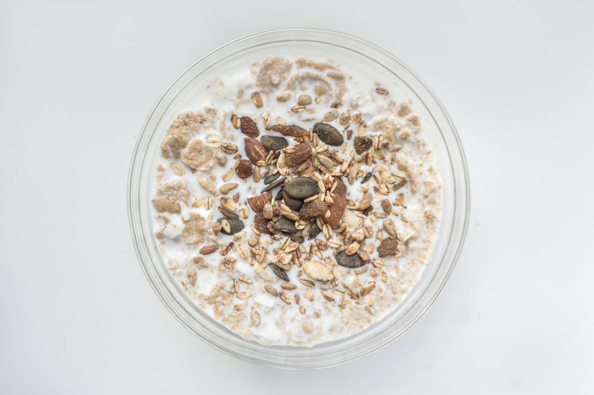

Oatmeal doesn’t have to be boring!
It’s time for my go to breakfast recipes. I know many people hate oatmeal (porridge), but it’s time to change this! I've got 5 different recipes that'll change your breakfast game.
by Katarzyna Zielińska
I eat oatmeal everyday. How is it possible that I haven’t got bored with it yet? It’s simple! I’m too lazy to do anything else and it’s very quick to make. And – I use different ingredients from time to time to *spice* things up.
THE RECIPES
The Base
This is the base you can use for all of your oatmeals.
Ingredients
- 1 cup of oats
- 2 cups of milk/water/plant drink
Preparation:
Boil 2 cups of water/milk. Then add a cup of oats. Boil on medium heat and stir until it’s soft.
Monday
It’s the most basic recipe. I eat my oatmeal like this everyday, usually even without dates.
Ingredients
- BASE
- banana
- a couple of dates
- a pinch of sugar
- a pinch of salt
tuesday
Ingredients
- BASE
- handful of walnuts
- handful of hazelnuts
- 2 spoons honey
- ½ spoon cinnamon
wednesday
Ingredients
- BASE
- 1 apple
- 1 pear
- 3 plums
- a pinch of cinnamon
- a few drops lemon juice
thursday
Ingredients
- BASE
- handful of raisins
- handful of sunflower seeds
- 1/2 spoon sugar
- 1/2 spoon cinnamon
friday
Time for the most fancy meal for the end of the week. This time we’ll be using just water
Ingredients
- 3 spoons oats
- apple
- 1 spoon of dried cranberries
- 1 spoon of roasted sunflower seeds
- a pinch of ginger
- a pinch of cinnamon
- a few drops lemon juice
- a spoon honey